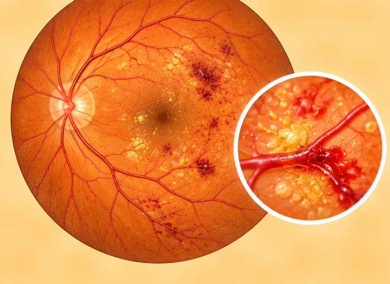

Optic nerve atrophy
Damage and loss of the nerve fibres that carry signals from the eye to the brain
What it is
The optic nerve carries what the eye sees to the brain. When its fibres are lost, vision can become dim, narrow or less sharp.
- Eye and optic nerve
- Any age
- Dim, narrow vision
- Which doctor
- Eye doctor (ophthalmologist), neurologist
- Common in
- People who have had optic nerve injury, inflammation, glaucoma or poor blood flow
- Contagious
- No
- Course
- Often it does not get better by itself, so finding the cause early matters
Common signs

Blurry visionBlurred vision
More signs
- Side vision getting smaller
- Colours look faded
- Trouble seeing in dim light
Why it happens
- Glaucoma, which is high pressure inside the eye
- Past inflammation of the optic nerve
- Poor blood flow to the nerve, or an eye or head injury
- A growth or pressure near the nerve
- Some poisons, medicines or lack of vitamins; sometimes it is not known
See a doctor first if
- Sudden loss of vision in one or both eyes: go to hospital now
- Vision loss with face drooping, arm weakness or speech trouble: call 999
- A painful, red eye with headache or feeling sick
- Pain when moving the eye, or a severe new headache
- Vision that keeps getting worse
If any apply, please see a doctor before a session.
This page is general information. Please keep taking your normal medicine and keep seeing your doctor.
Keep taking your normal medicine and keep seeing your doctor. Our session is a gentle support and does not replace medical care.
Looking after yourself

See your doctor for check-upsRegular medical follow-up 
Check your blood pressure at homeHome BP monitoring 
Stop smokingSmoking cessation 
Make the home safe from fallsFall prevention
More ways to look after yourself
- Use good light and ask about low-vision aids
Tell your therapist
- Diabetes or less feeling in the skin
- High blood pressure
- Pacemaker or metal implant
Your therapist will go through this with you before starting.
Questions and answers
What is Optic nerve atrophy?
Damage and loss of the nerve fibres that carry signals from the eye to the brain. The optic nerve carries what the eye sees to the brain. When its fibres are lost, vision can become dim, narrow or less sharp.
What are the common signs of Optic nerve atrophy?
Blurry vision
Why does Optic nerve atrophy happen?
Glaucoma, which is high pressure inside the eye · Past inflammation of the optic nerve · Poor blood flow to the nerve, or an eye or head injury · A growth or pressure near the nerve · Some poisons, medicines or lack of vitamins; sometimes it is not known
How can I look after myself with Optic nerve atrophy?
See your doctor for check-ups · Check your blood pressure at home · Stop smoking · Make the home safe from falls
Can an AI Body Master session help with Optic nerve atrophy?
A session is gentle, needle-free meridian support for your wellbeing. It does not treat or cure Optic nerve atrophy and never replaces your medicine or your doctor. Tell your therapist about it before the session starts.
Related conditions
References: General information based on public health sources such as Mayo Clinic, NHS, Cleveland Clinic and NCBI StatPearls.
Page updated: 2026-11-01